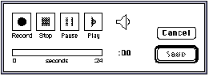
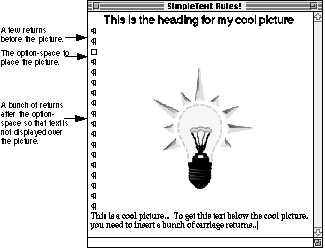

|
|
This Technote explains how to use SimpleText to create Release notes and ReadMe files, complete with pictures and sound, even QuickTime movies.
The primary purpose of this Technote is to show you how to create read-only Release notes. This Note also showcases some of the new features that have been added to SimpleText 1.3.
This Note assumes familiarity with ResEdit.
[Oct 1 1995]
|
About SimpleText
SimpleText was created to integrate the many different versions of TeachText that were created by different groups within Apple. As such, it has a number of features that are not fully fleshed out - SimpleText is not an integrated package, nor is it meant to be.
- Although Simple Text runs QuickTime movies, you can't put them in a document or edit them, you can't even copy a frame out.
- It is a word processor, but it still only lets you work on documents that are 32K, or less, in length.
- It records sounds, but you can only have one per document, and it can only record sounds up to 24 seconds in length.
- SimpleText can do QuickDraw 3D, but it only has the minimum support required.
SimpleText is the utility knife of software. It's not too complicated, and it won't let you down if you don't ask for too much. Apple ships it with every Macintosh. It is a simple text-editing tool with support for the standard editing primitives, saving and printing, even with non-Roman languages and with QuickDraw GX.
SimpleText supports Drag & Drop, which simplifies the creation of documents by allowing passages to be moved around visually instead of the old copy and paste method.
SimpleText's possibly greatest feature is that it allows developers to create Read-only Release notes that include text, pictures, and sound.
SimpleText checks the file type of text documents to determine if they are modifiable or if they should be opened as read-only, allowing the user to scroll through the document or print its contents, but not to modify it. If the file type is "TEXT" (the default file type for documents created by SimpleText) then the file is modifiable. If the file type is "ttro", the file is read-only.
Adding Sound to Your Document
SimpleText allows you to record one sound, up to 24 seconds in length, which you can play back by selecting Play from the Sound menu.
Sound can be in modifiable (type "TEXT") or read-only (type "ttro") documents. You are limited to only one sound per document, however. SimpleText will record up to 24 seconds of sound with its minimum memory partition of 192K or with any other size memory partition. Increasing the size of the memory partition does not allow you to record more sound. If you need to record more than 24 seconds of sound, you will need to use another program and paste the sound into the document using ResEdit. SimpleText will play any length sound, as long as it has enough memory to do so. If you install a sound that is longer than 24 seconds, set SimpleText's memory partition to the size of the sound plus at least 100K.
The sound is stored as 'snd ' resource number 10000; it is not marked as purgeable by SimpleText. Twenty-four seconds of 22.254Khz sound is 90K. Having a sound, of any length, embedded in your document will increase the loading time of the document slightly.
To add sound to a document: open the document with SimpleText, go to the Sound menu and choose Record. The following dialog box appears as shown in Figure 1.

Figure 1. The dialog box for sound recording.
Input is from the Input source selected in the Sound control panel. Simply begin recording and save the document when you are done.
If you want to put more pre-production into your sound, or have a longer sound embedded in the document, you need to have a 'snd ' resource that you can paste into the document using ResEdit. Set the resource ID to 10000, save it and you are done.
Once a sound is added to a document, all that is required to play the sound is for the user to select Play from the Sound menu. You will probably want to have a line of text in your document that alerts the user to the fact that there is a nifty audio clip available, and to hear it, they need to choose Play from the Sound menu.
Playing QuickTime Movies with SimpleText
QuickTime movies can also be played back from SimpleText, but they cannot be embedded in the document. If a release requires (or just happens to have) a QuickTime movie, the user simply has to have QuickTime installed and has to open the movie to view it. The movie is opened in its own window with the standard QuickTime controls at the bottom of the window.
This feature is meant to allow users to view a QuickTime movie if they do not have MoviePlayer; it is not intended to replace MoviePlayer, and as such does not allow for any type of editing (i.e., no Cut, Copy, or Paste).
3D Without the Glasses
SimpleText works with QuickDraw 3D objects in much the same way that it does with QuickTime movies. 3D objects can't be embedded in the document, but SimpleText will open a QuickDraw 3D file (type 3DMF), display it, and let you rotate, zoom in and out, and translate the object's axis. The user can even drag and drop the objects from SimpleText into the Scrapbook!
|
Note:
The QuickDraw 3D Viewer needs to be installed before SimpleText can work with QuickDraw 3D files.
|
Making SimpleText Sing
Well, you can't actually make SimpleText sing, but it can talk using Text To Speech technology (and some of the voices almost sound like they are singing). To make SimpleText speak, simply install the Text To Speech software, open a document and choose Speak All from the Sound menu. You have the choice of any of the voices offered in the Voices sub-menu, some of them sound really nice, others are just for fun.
SimpleText can also speak only the selected text: select the text you want spoken and choose Speak Selection from the Sound menu.
How SimpleText Handles Pictures
SimpleText operates on documents of the two file types previously described, and both types may contain pictures. Pictures tend to disappear, however, when editing the document in which they are contained, thus all documents which contain pictures should be distributed as read-only (i.e., file type "ttro").
A document's pictures are stored as purgeable 'PICT' resources in the resource fork of the document. Whenever a file is opened, each of these picture resources is loaded in numerical order, and its size is read into an array (so SimpleText can later test to see if a picture needs to be drawn into the window without loading the picture). After the picture resources are loaded (and every time the window is resized thereafter), SimpleText scans the text of the document for non-breaking space characters (ASCII $CA, entered as Option-Space Bar and usually used instead of a space to prevent related words from being split across line boundaries). In SimpleText documents, a non-breaking space character represents the line on which the top of a picture resides. Figure 2 illustrates this relationship.

Figure 2. Picture with non-breaking space and surrounding text
If there are more non-breaking space characters than 'PICT' resources, SimpleText ignores the extra non-breaking spaces. Likewise, if there are more 'PICT' resources than non-breaking space characters, SimpleText ignores the extra 'PICT' resources. Every time an update event occurs, SimpleText checks each picture in the array, and if any of the pictures in the array overlap the current update region, it draws that picture.
As it happens, TextEdit is particularly messy about redrawing large portions of the screen when a user is entering text, and this makes editing documents with pictures rather clumsy. Since resizing the window causes another scan for non-breaking space characters as well as an update event, sizing the window in any way causes SimpleText to "refresh" the pictures.
Back to top
Creating Release Notes With SimpleText
So how do you use SimpleText to create Release notes? It's easy. Get those creative juices flowing, grab a cup of strong coffee (or your favorite highly caffeinated beverage), and read on.
Write the Text
You can handle this part yourself. Use any word processor or text editor that supports saving to text-only files (i.e., those files of type "TEXT"). You can even use SimpleText if you so desire. Don't put carriage returns after each line either, since SimpleText automatically wraps lines, just like a real word processor (the SimpleText window conforms to the size of the current screen, so don't depend on the breaks you see either). Don't worry about non-breaking space characters at this point either; you'll get a chance to add them later. Just think about what pictures you want (if you want them at all) and in what order you want them. When you are finished with the text, save it as a text-only file. If your word processor gives you the option of putting carriage returns after lines or after paragraphs, choose the after paragraphs option.
SimpleText now lets you use different fonts, sizes and styles in your documents. No longer are you held captive to only one font. Be brave, spice up your document, this is a Mac, not a VT100. Just remember that people actually have to read this document, so don't make it so cluttered with fonts and sizes that it's illegible. Also stick to the standard fonts like Times, Helvetica, and Geneva, since if the font is not installed on the reader's system, the text will end up in Geneva.
Draw the Pictures
First make a backup of your Scrapbook file (you should find it in your System Folder) if it contains anything you consider important. After backing it up, throw away the original copy (this makes things much easier later on in the process), but don't worry, if you made a backup you can use it to restore the original when finished. If you prefer, you can just rename the Scrapbook file, which effectively makes a backup copy.
Unfortunately, the ideal method for creating a picture involves both a paint program and a draw program. Once you are finished with your pictures, save them to a document, then do one of the following:
1. If you used a painting program to draw your pictures:
- Select your picture with a Lasso tool to ensure that only the minimum size of the image is copied. This takes up less space on disk and centers the picture in the document.
- Copy the picture then paste it into the Scrapbook.
- Repeat these steps for each individual picture you wish to include in the document.
2. If you used a draw program to draw your pictures:
- Copy each of your pictures into the Scrapbook.
- Launch a paint program, then copy each picture from the Scrapbook into the paint program.
- Once every picture is in a paint document, open the Scrapbook and clear each of your pictures from the Scrapbook. The Scrapbook should say "Empty Scrapbook" when you are finished (unless you did not start with a fresh Scrapbook).
- Follow the procedure in the steps for a painting program to copy and paste each of your pictures back into the Scrapbook.
At this point, regardless of which program you originally used to create your pictures, they should all be in the Scrapbook and in bitmap form (after being copied with a Lasso tool from a paint program).
Because of a quirk in the Printing Manager and PostScript(R), you have to perform a few more steps.
- Launch a draw program, then copy each picture from the Scrapbook into the draw program.
- Once every picture is in a draw document, open the Scrapbook and clear each of your pictures from the Scrapbook. The Scrapbook should say "Empty Scrapbook" when you are finished (unless you did not start with a fresh Scrapbook).
- Copy each picture back to the Scrapbook. This process makes the pictures "transparent" when printed, and this is important to avoid a problem with white, horizontal stripes running through your pictures.
Adding the Pictures
Launch ResEdit and open the text-only SimpleText document (you may want to work on a backup copy). SimpleText saves every document with a resource fork that holds the font information, so ResEdit should not warn you about the file not having a resource fork unless you created the document with a program other than SimpleText.
Open your Scrapbook file (the one with all the pictures in it). Its ResEdit window should contain a 'PICT' resource along with some others. Select 'PICT' (don't double-click), and copy this resource to the SimpleText document by bringing its window to the front and selecting Paste from the Edit menu. If you do this step correctly, your pictures and text should all be in the same document. Save the SimpleText document so you don't have to do this step again and close the Scrapbook.
Now you need to put the pictures into the proper numerical order so they show up in the correct order in the SimpleText document. Numbering starts at 1000 (i.e., first picture should be 1000, second picture 1001, etc.). To order these pictures, double-click on the 'PICT' in the SimpleText document's window. You should get another window which contains each of the pictures you copied into this document. Use the scroll bar until you find the first picture you want to appear in the document. Select it (by clicking on it once), and choose the Get Info or Get Resource Info option to get information on the resource. ResEdit displays an information window about the selected resource with space to enter a name and an ID (there is already a random ID number assigned). Change the ID to 1000 and give the picture a name too (i.e., "Figure 1", etc.). Near the bottom of this window you can see the resource attributes. Be sure that the "Purgeable" attribute is checked, then close the window. Repeat this process for each succeeding picture, giving each a successive number (i.e., 1001, 1002, 1003, etc.). When you are finished with all of the pictures, save the file and quit ResEdit.
That's the difficult part; the rest is icing. Go get some more coffee or whatever it is you are drinking.
Edit the Text to Make It Look Pretty With the Pictures
Launch SimpleText and open your document. Find the location where you want to place the first picture and position the text cursor there. Enter a carriage return or two (more if you want more space before the picture) then a non-breaking space character (Option-Space Bar, remember), which will be invisible.
Now resize the window, and voilà, when the window redraws, your picture will be just below the non-breaking space character. Now enter as many carriage returns as necessary to provide space for the picture. When you enter the first carriage return, SimpleText will erase the picture, so you will need to resize the window again to verify your spacing, clicking the zoom box works well.
Once you have enough room for the first picture (you probably want to leave an extra blank line or two after it too), move on to the next desired picture location and repeat the process. Continue this process (and don't forget to save the document along the way) until you have placed all of the pictures. When you finish placing the pictures, you should save the document again and try printing it on both an ImageWriter and LaserWriter if possible. You may wish to tweak the picture spacing or location to keep them from crossing printed-page boundaries.
When you are satisfied with the results, Quit SimpleText.
Making the File Read-Only
Make a copy of the file (to save a step if you decide to edit it again) then launch ResEdit. Now choose Get Info from the File menu and change the file type from "TEXT" to "ttro" (the lowercase is significant) and check to make sure the creator type is "ttxt". Now quit ResEdit and save the changes to the document when prompted.
That's all there is to it.
Back to top
A Few Hints On Creating Good Documents With Pictures
The following hints should help to make your SimpleText document creation faster and more efficient as well as make the final document as nice as possible for the user.
- Always use the Lasso tool in paint programs to select pictures to appear in SimpleText documents; it makes them smaller.
- Keep pictures as small and simple as possible; the document takes up less room on disk and scrolling is faster.
- If two pictures appear on top of each other, you probably have two non-breaking space characters on the same line. Simply delete one to fix it. It is generally a good idea to put non-breaking space characters on a line by themselves with a blank line before it. In addition, always leave room for an extra line after the picture so you do not have the picture running into the text which follows it.
- If you need to use the non-breaking space character as a non-breaking space, you can. Since SimpleText assigns the numbered '
PICT' resources to the non-breaking space characters in the document, you can simply skip a resource number to use a non-breaking space character as a non-breaking space in the text. For example, if you had four non-breaking spaces in the document and you wanted pictures at the first, second, and fourth, you would number your 'PICT' resources 1000, 1001, and 1003. The third non-breaking space character would normally have 'PICT' resource 1002 assigned to it, but since there is not a resource with this ID, it simply acts as a non-breaking space in the document.
- Don't worry about how horrible everything looks when you are editing; users will not be able to edit your document (unless they have read this Note), so they will not see the awful flashing, disappearing pictures, etc.
- Make the document read-only even if you do not use pictures. Distributing read-only documents to users gives the consistent impression that Release Notes are not to be modified.
- If your pictures are not appearing as you think they should, and if you cannot figure out what might be wrong by following the sequence in this Note, then try the following: Open the document with ResEdit. Click once on the '
PICT' list and choose Open Picker by ID from the Resource menu of ResEdit 2.x. You should get a window with a list of all of your pictures, in order, and numbered sequentially from 1000. If this is not what you get, then you have missed a step along the way and need to make sure all your pictures are in the resource and numbered sequentially.
Back to top
References
ResEdit(TM) Reference, from Addison-Wesley
Change History
|
01-April-1990
|
Originally written as "The Compleat Guide to TeachText."
|
|
01-October-1995
|
Updated to SimpleText 1.3 rather than TeachText.
|
Back to top
Downloadables
|

|
Acrobat version of this Note (120K)
|
Download
|
Back to top
|